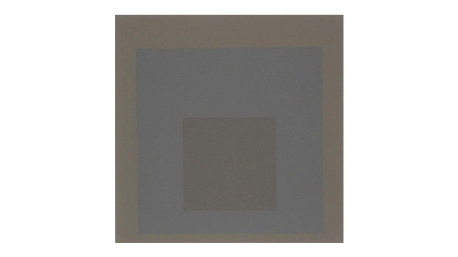

minimal

Josef Albers
https://artblart.com/tag/josef-albers-piano-keys/-どんな人
美術学校で教鞭をとっていました。主に研究していた分野は色彩と形態の関係について。様々な色と大きさの正方形のみを重ねて描いた作品を多く制作していました。平面構成の権化。
-解説
形と色の違う正方形が重なっているだけの作品です。なぜこのような形式をとっているのかというと、純粋に色同士のバランスをとることだけを試みた作品だからです。教育者・研究者として、色彩の視覚的効果を探求した結果このような一つの完成された作品形式が生まれました。
-好きなところ
PC画面で見るのと生で見るのとでだいぶ見えかたが変わる作品だと思います。最初は単純な作品というイメージしかなく、あまり好きでもなかったのですが、以前生で見た時すごい視覚的に「心地よい」と感じてそれ以来印象が変わりました。配色の参考にもなる作品だと思います。